[Kefalonia 2023]
Kefalonia - Day 10
Late up again - so had brunch around 11:30 at Siroco Cafe in the main strip. We both had coffee and I had a chicken clubman sandwich and Mel a Greek Salad which she didn’t like as it didn’t contain “real” Feta. Then walked to the beach with our own umbrella where we read, swam, slept and talked. Mel mostly slept. Ended up at Veto’s bar for the footy, then quick change and back out for the 5pm matches with Mel coming to me later. Met some lovely people at the bar. Vale won with a 99th minute winner get in. We also both sneaked a chicken Gyros. Next stop was Captains bar for cocktails where we met the lovely couple from earlier. 3 long islands for me and 2 for Mel and another who’s name evades me…maybe a woowoo. Happy bill for 6 cocktails was €42. We all then went to Sally’s bar foe one and then onto Loco’s nightclub which was a Northern Soul night. Great music, lot of people there but not many on the dance floor but we made amends. Cash only here though so needed to visit an ATM to pay, Mel did a temporary backdoor boogie to sneak in a Cheese and bacon Crepe…the little sneak. We all then went for a nightcap at Michael’s bar. We were all in a state of diminished responsibility by this time so we staggered home….along the way we met a sozzled female holiday maker passed out who was literally being carried to our hotel her boyfriend and 3 others passers by. A disgrace I say.
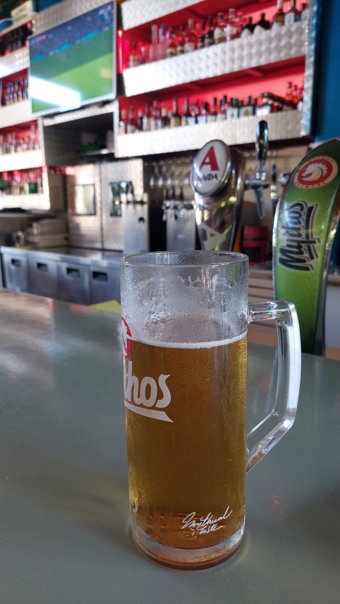
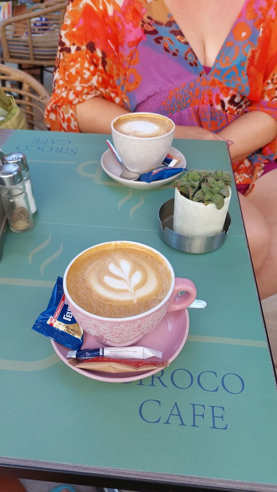
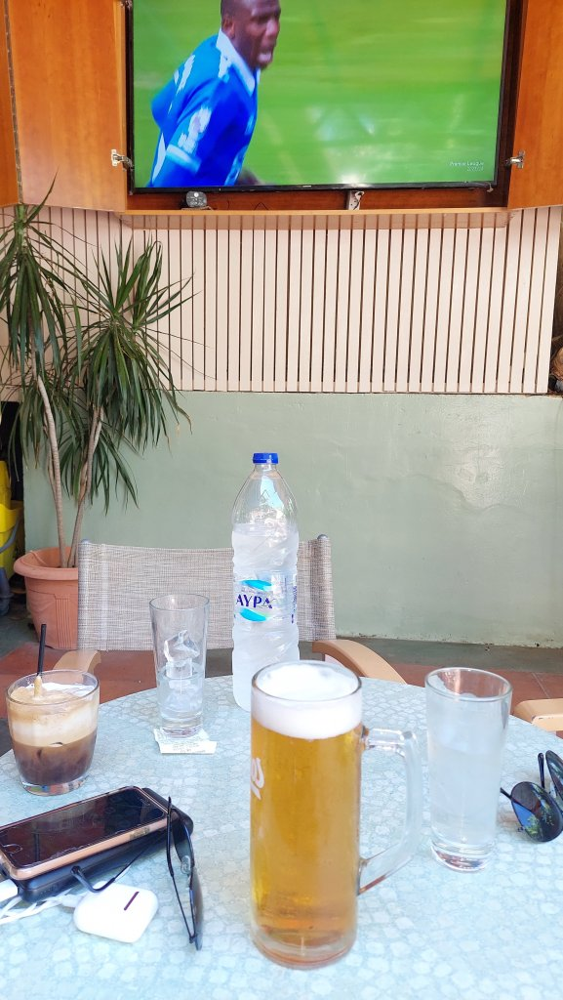
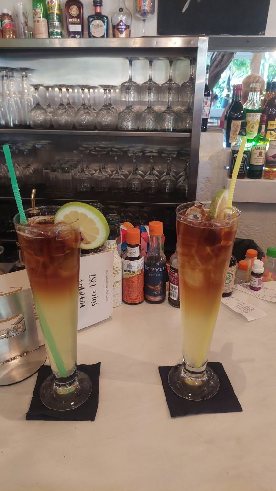
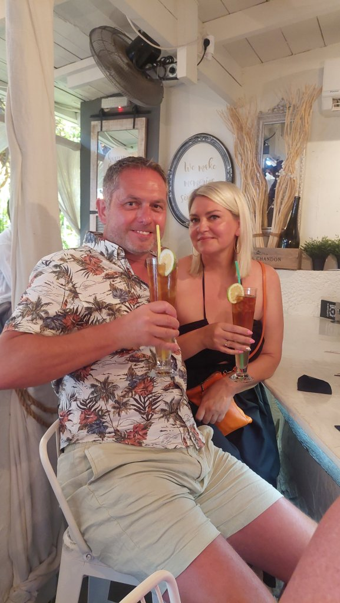
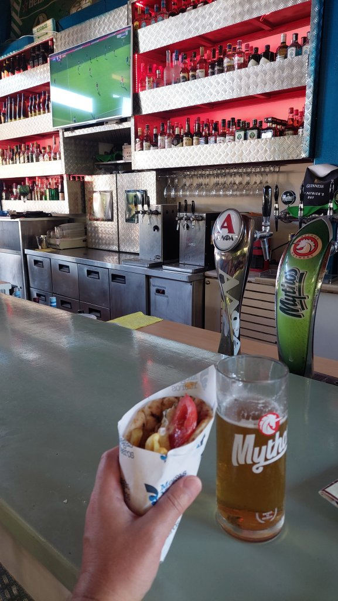
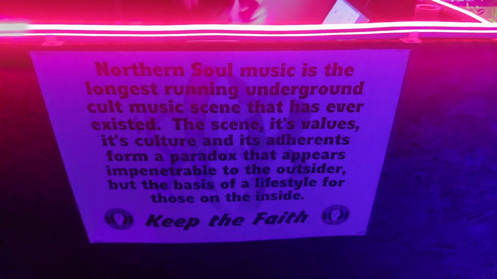
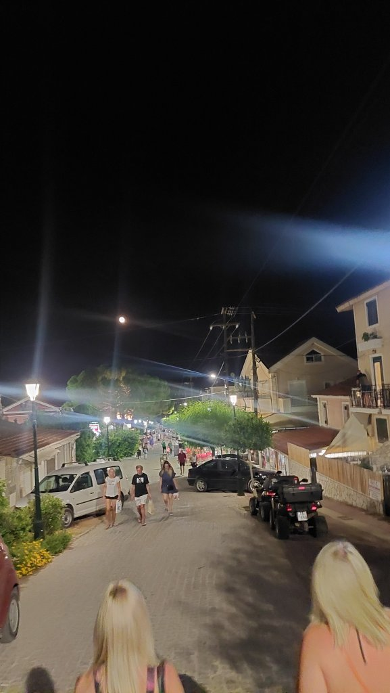
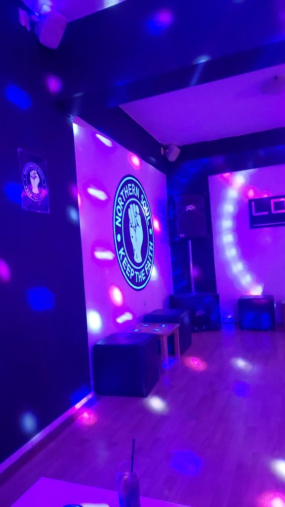
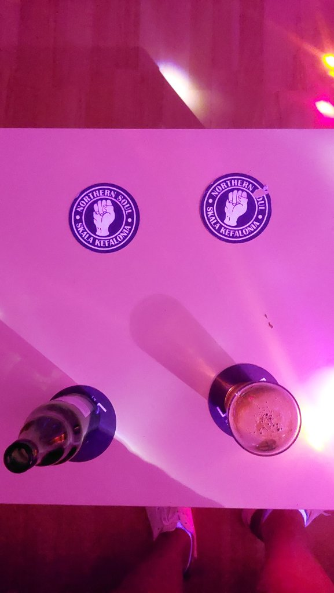
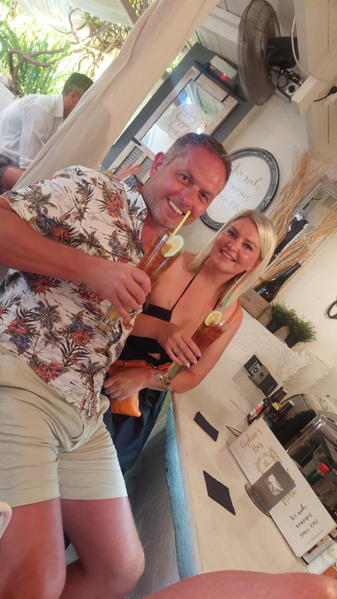
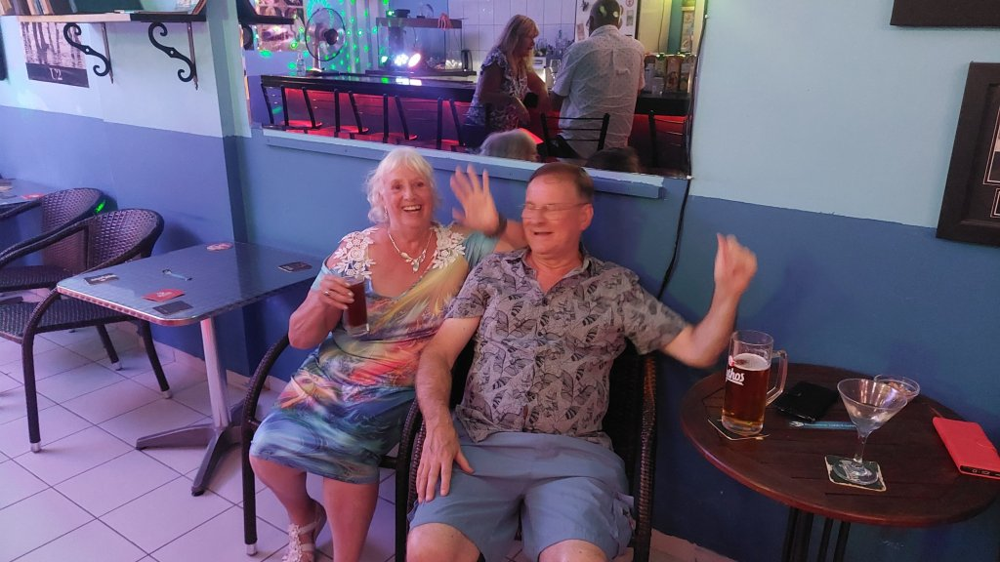
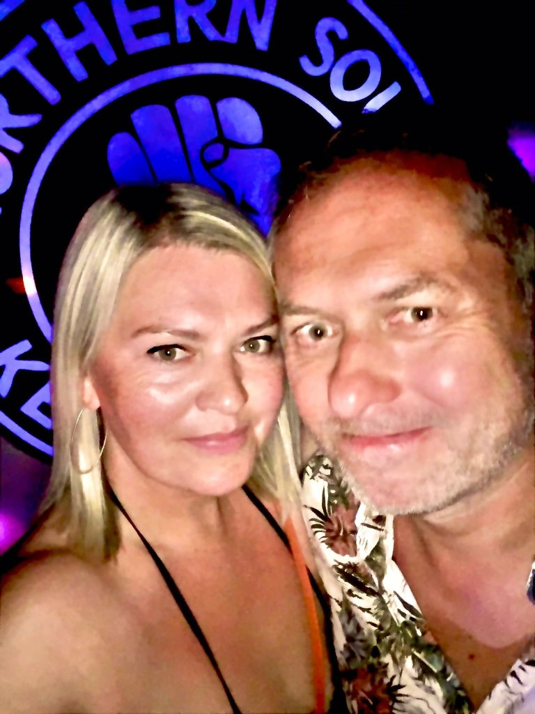